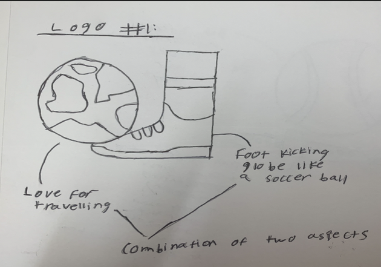
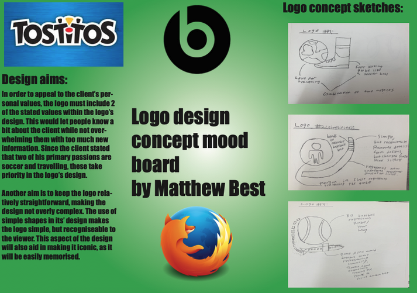
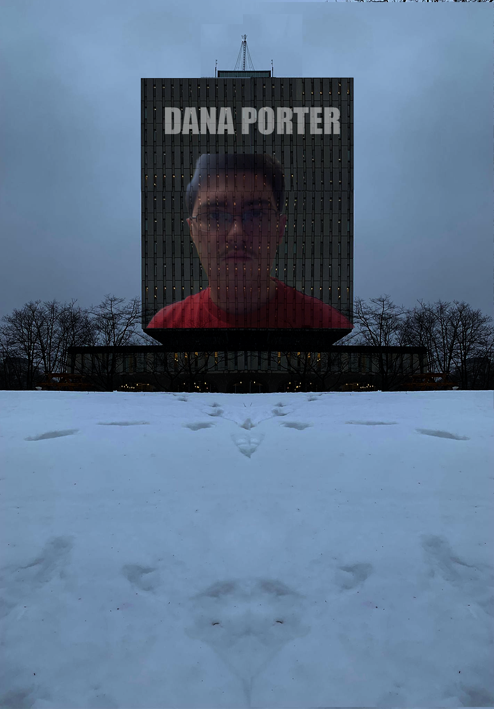
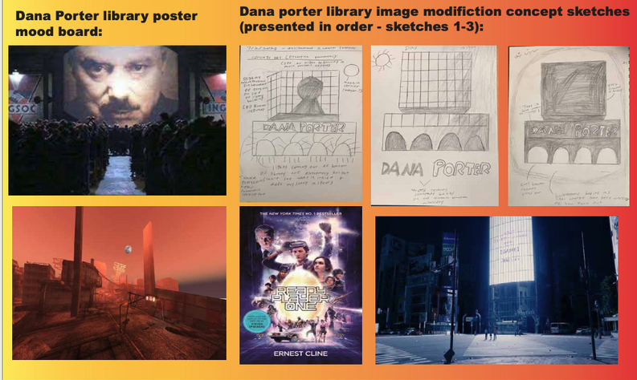

By clicking the button below, you can view a portion of my completed projects over the course of my Global Buisness and Digital Arts degree. Undergoing the creation of these projects involved exploring and learning how to use software such as Adobe Photoshop, Illustrator, Indesign, and Adobe Premiere Pro. This was a big step and an intriguing learning experience for me, as I myself never previously used any industry-standard software prior to entering University.
End of section
Let Me Tell You About Myself.
About Me:
I have traveled internationally from Hong Kong to attend my studies at the University of Waterloo, as I wanted to see what it would be like to study abroad while taking part in a new culture. Upon discovering an interest in the marketing and product design aspect of my high school Design Technology class, it prompted me to pursue a degree in Global Business and Digital Arts. Having completed the IB Diploma program, I am a hard-working and determined person who is always open to trying new things, which prompts me to find a solution to any challenges I may face in my work.
End of section
My Portfolio:
Project #1 - Client Logo Design:
In this project, I was given a set of goals and visions by a randomly assigned client, for which I would have to design a logo that reflected aspects of their personality. I would first have to create planning sketches of possible logos while explaining my plans to my client through the form of a mood board. Following this step, the client provided feedback based on my plans, from which I created the final product. This project was a good learning opportunity for me, as I had to learn how to fulfil the demands of a client within timed conditions while learning how to use the software Adobe Illustrator for the first time. I also learned the importance of setting specifications for which I could stick to throughout the design process. One aspect that could be improved on for this piece of work, is that it wasn’t entirely polished at the end of the design process with a few minor mistakes that I could spot. This could be improved on by creating a draft digital logo and collecting further feedback from my client before moving forward with the final product.


Project #2 - Emotional Video:
In this project, for my GBDA 201 class I aimed to create a short silent video that could convey two given emotions to the viewer without any context. I chose to portray the emotions of "comfort" and "delight". After shooting the video, we needed to edit our video in Adobe Rush. I felt that some challenging aspects about carrying out this task, was that me and my filming partner needed to shoot way more B-Roll footage than we thought we would need. This would ensure that we wouldn't run out of footage during the editing process, as we were unsure of which shots we would include at the time. On top of that we needed to constantly change camera angles when filming each shot, so that I had a variety of options to choose from when deciding which shot looked best. Lastly, during the editing process I needed to account for the exposure, shadows, and feel of the colors (warm or hot) that were being portrayed in each scene. The way I edited my video, played a big role in properly portraying the emotions I wanted to convey.
Project #3 - Themed Poster Design:
For this project, I had to design a two sided poster where we would modify a location of our choice under a given theme. I chose to take a picture of the University’s Dana Porter Library, given its' unique architectural style and portray it in a sci fi dystopia theme since that is a movie or story genre that heavily interests me. This project required me to use Adobe Photoshop in order to modify the photo to portray our theme. For the first poster I extended the building itself, while darkening the image to make it feel more sinister and imposing. I then put a slightly transparent picture of my face on the building, inspired by Big Brother from George Orwell’s 1984. In the second image, I was able to make the building and its’ surroundings darker to create a silhouette while putting a rust orange hue over the image to give it a post apocalyptic feel. A piece of feedback that was given, would be to use the rule of thirds in order to make my posters more aesthetically pleasing to the viewer. This is due to the fact that there was some unused space at the bottom of each poster that didn’t contribute to my design.


Project #4 - Logo Redesigns:
In this project, similarly to my first project, I took two different big and well-known brands and redesigned their logos in my own style. The brands I chose were Youtube and Google Chrome, as they are both apps that I commonly use in my day to day life. For each logo I sketched 2-3 potential designs I could choose from where I redesigned the classic logo by modifying elements of them in my own way. One of the main rules I aimed to stick to was keep the logos comprised of simple shapes while maintaining their primary colours. This would make the logos easily recognisable and iconic to the brands they are representing.